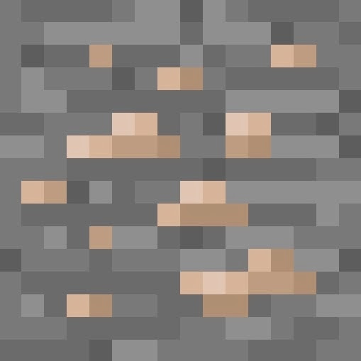
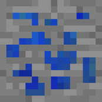
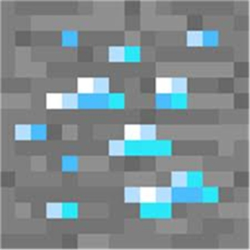
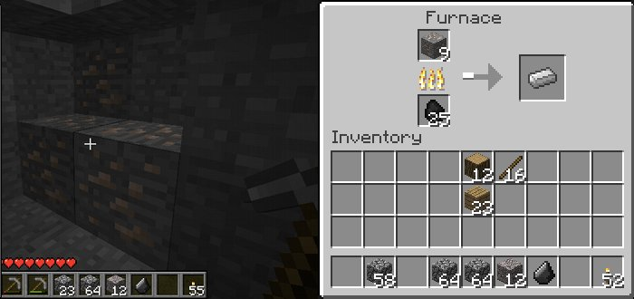

These are the main ores of minecraft. From left to right, they are:Iron ore, Lapis ore, Gold ore, and Diamond ore. Diamond is the rarest, and most durable for building tools. The crafting recipe for a pickaxe is shown in the "Beginning Minecraft" section. Of these ores, you can mine iron and lapis with a stone pickaxe, but for gold and diamond you need an iron pickaxe.



Do not be fooled by how shiny gold is, it does not make a good material for tools. It mines fast, but it can only mine things that a stone pickaxe can, and to top it off, it does not last near as long. Gold is not a good material for tools or armor, unless you want to quickly get a lot of a basic material, such as cobblestone.

When you are collecting resources, you will receive Logs from trees, which are crafted into planks, you get cobblestone from stone, which is the material used, but from iron and gold you will get iron ore, or gold ore. This means you will have to put those ores in a furnace with some coal or other fuel to smelt them into their respective material:Iron ingots or Gold ingots. Above shows iron ore in game, and the Furnace Gui when you access it(on the right), and where to put in the ore, and the fuel. It also shows that the output is on the right.